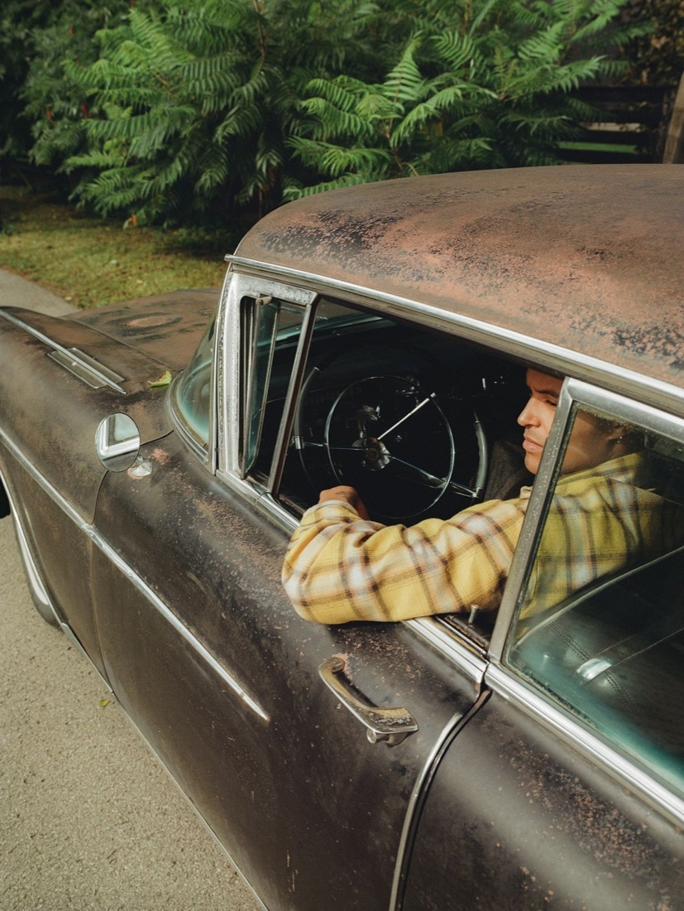
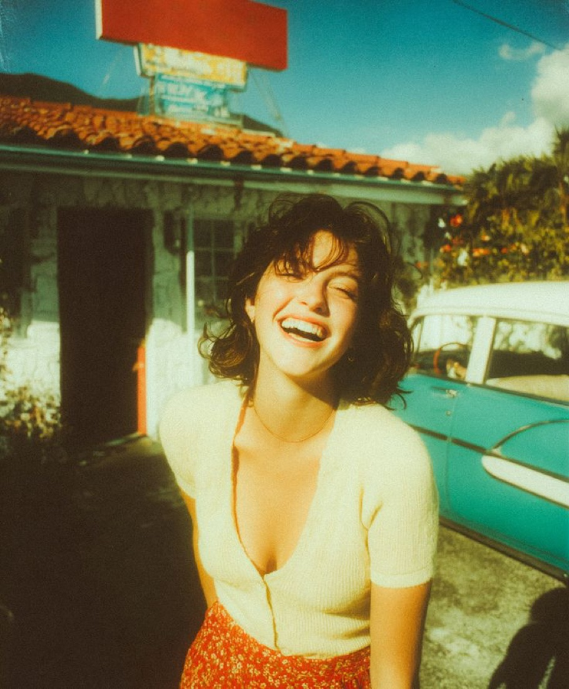
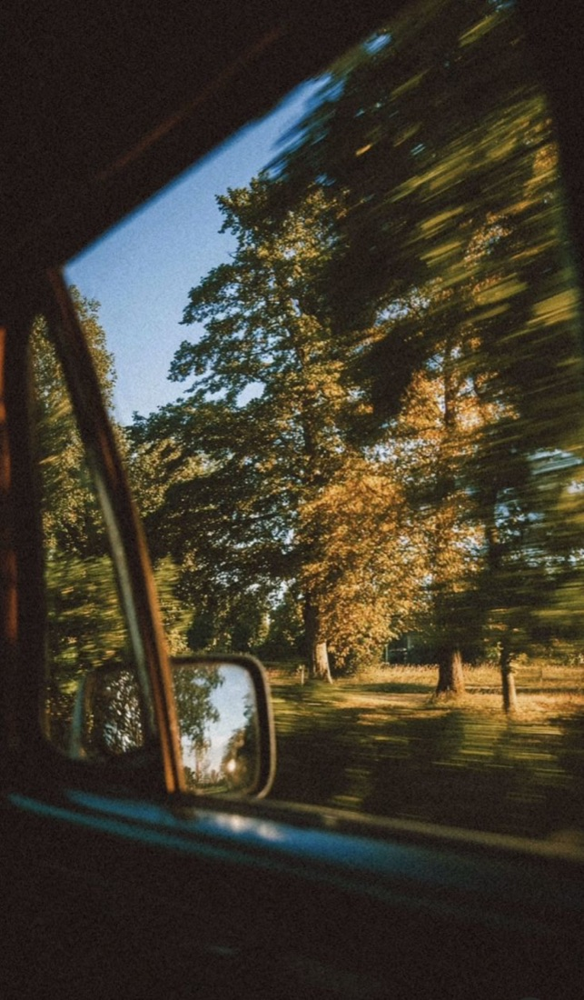
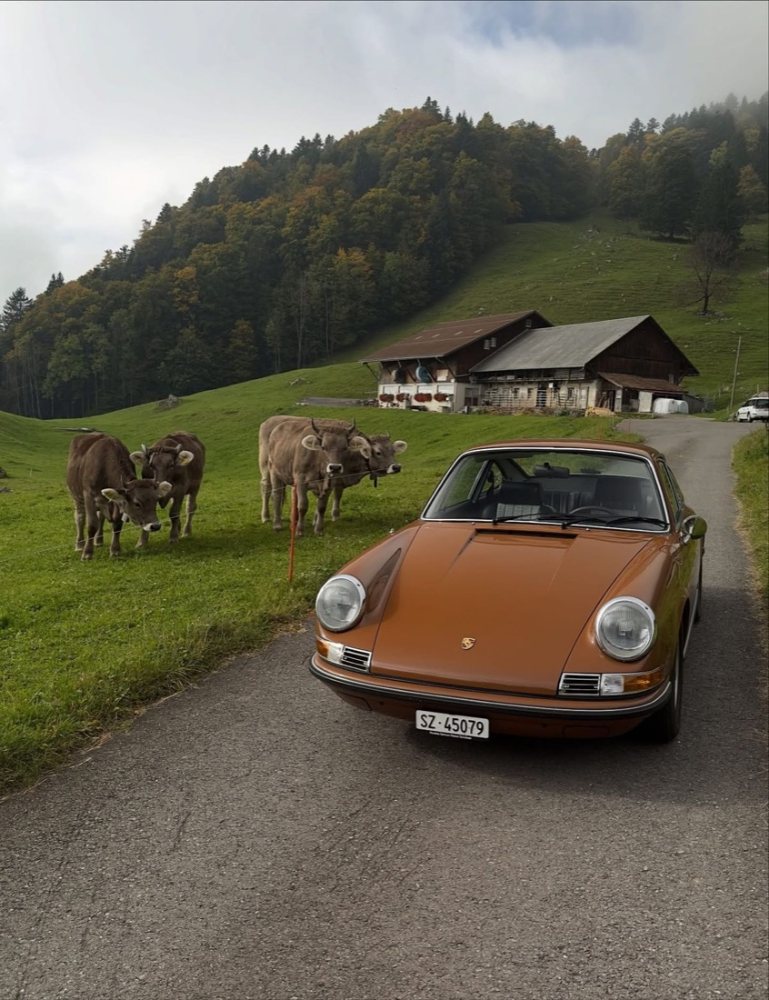
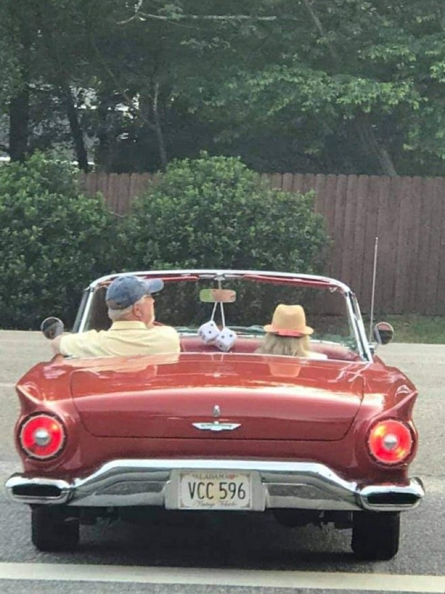
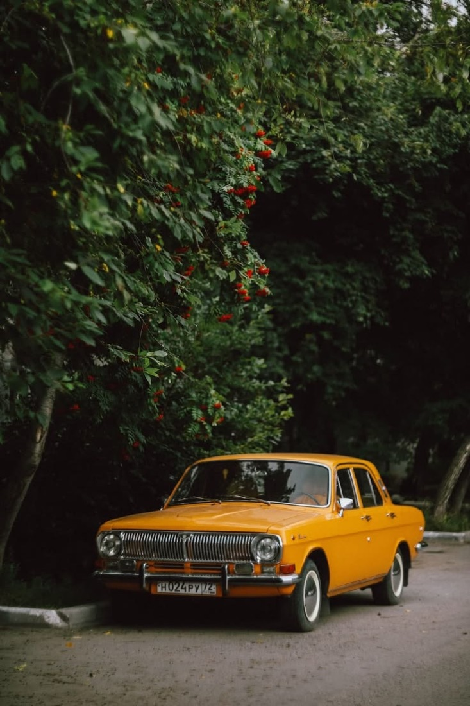
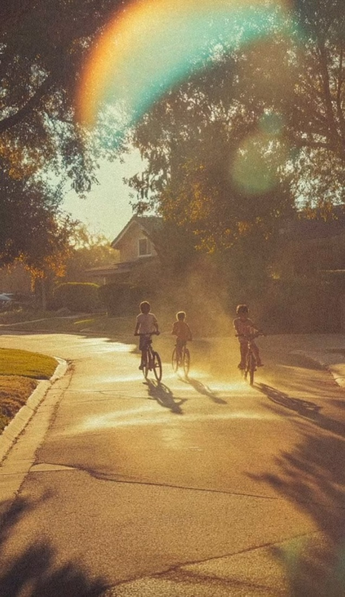

1Brand: vy a vaše dílna
Hlavní postavou vašeho Instagramu budete vy, ne jen auta. Ukážete, co se s veteránem u vás děje, řeknete to po svém a klidně si z toho uděláte legraci.
Kbelnice u Jičína
Ukazujeme auta před a po
Poptávky pište do zpráv
2Mood boardnové
Takhle mají vaše videa a fotky působit. Fotky jsou z internetu, jen pro představu nálady. Ve vašich videích budou vaše auta.











- SvětloRáno a večer, slunce nízko, zboku nebo proti. Polední slunce ne.
- BarvyTeplé. Med, koňak, zeleň stromů, krémová. Stíny spíš do hněda než do černa.
- ZrnoJemné, jako na starém filmu. Obraz trochu měkčí, občas odlesk slunce v objektivu.
- ZáběryZ okna auta, ruka na volantu, palubní deska, auto mezi stromy nebo v polích, lidi u auta, kteří se smějí.
- PohybAuto jede a krajina se rozmazává. Řídí pomocník, vy točíte ze sedadla spolujezdce a telefon držíte v klidu.
- LakZblízka na lak barvy neupravujeme. Odstín musí odpovídat skutečnosti. Při jízdě můžete i hotové auto lehce oteplit.
Jak toho docílit v telefonu
Točte ráno nebo večer. Barvy pak doladíme ve střihu: teplota mírně do teplé a jemné zrno. Když video stříháte sama, v CapCutu to jde stejně. U detailů laku nic z toho.
3Barvy, písmo a vzhled
Vychází z toho, co už máte: bílé logo z vašeho webu a černá z vašich popisků. Místo jasně oranžové používáme hlubokou barvu koňaku, jako stará kůže. Hlavní plocha je teď krémová nebo vaše fotka. Tmavá barva je teplá ořechová, ne čistě černá. A přibyla jedna kontrastní barva do detailů.
Logo
Logo dáváme malé do rohu, bíle na tmavé i na koňaku. Nic dalšího k němu nepřidáváme.
Barvy
#F3EEE6hlavní světlé pozadí
#211A14text, tmavé proužky
#9A4A1Ejedno slovo, štítek
#D9A35Bslovo na fotce a tmavém
#02C9CAjen detaily
#FFFFFFtitulky, logo
Štítek s rokem a modelem zůstává. Tečky na něm jsou tyrkysové a počítají se jako jeden detail.
Písmo
Jak to vypadá ve videu a na profilu
na sraz
v dílně
Fotky v ukázkách jsou z vašeho webu, jen pro představu. Ve skutečných videích a obálkách budete vy a auta z vašich videí.
Pravidla v kostce
- Pozadí krémové nebo fotka, u obálky Ptáte se koňak. Tmavá ořechová jen jako proužek pod textem.
- Nadpisy vždy Barlow Condensed velkými písmeny.
- Na obálce vždy štítek: rok a model auta, nebo název pilíře (Na cestách, Ptáte se).
- Logo malé v rohu, vždy bílé.
- Záběry z jízdy a nálady teplé s jemným zrnem. Zblízka na lak bez filtru.
- Tyrkys nejvýš jeden detail na slidu.
- Na jednom slidu nebo obálce nejvýš jedna myšlenka.
4O čem budou videa: 5 pilířů
| Pilíř | O čem | K čemu |
|---|---|---|
| Na cestách | Staré auto, jak jezdí nebo jak vypadá v krajině. Z okna, za volantem, mezi stromy. Nálada a stará česká písnička. | Dosah. Hodně u vás fungují videa, kde jsou retro auta a stará česká písnička, třeba Žigulíky. Na cestách na to navazuje: stejná nálada, jen auto jede. |
| Domluva | Jak to u vás chodí, z vašeho pohledu. Hovor s majitelem, první prohlídka auta, výběr odstínu, předání klíčů. | Důvěra a poptávka. Lidi uvidí, jak se s vámi domlouvá, ještě než vám napíšou. |
| V dílně | Jedna věc z práce obrazem. Měření odstínu, vrstvy starého laku, pyrolýza. | Důvěra. Kvalitu neříkáte, ukazujete ji. |
| Před a po | Takhle přijel, takhle odjíždí. Odhalení zakrytého auta. | Dosah a důvěra. |
| Ptáte se | Odpovědi na otázky z komentářů a zpráv: ceny, jak dlouho to trvá, jestli děláte i klempířské opravy. | Poptávka. Kdo se chystá auto svěřit, dostane odpověď dřív, než se zeptá. |
Tři účely videa
Každé video má jeden hlavní účel, někdy pomůže i druhému. Úspěšný Instagram potřebuje všechny tři.
Jak to střídat
Jedno video týdně. Za měsíc:
Krátké jízdy můžete přidat kdykoli navíc, jsou rychlé na natočení.
5Formáty videí
| Formát | Co v něm je | Délka | Hudba | Účel |
|---|---|---|---|---|
| Jízdapilíř Na cestách | 3–5 záběrů: z okna, ruka na volantu, auto projede kolem telefonu, krajina. Jedna věta na obrazovce, auto a rok, třeba „[auto], [rok]. Cesta na sraz.“ | 7–15 s | stará česká písnička nese celé video | Dosah |
| Hádejte rokpilíř Na cestách | Tři auta vedle sebe na zahradě. Na obrazovce „Který je nejstarší?“ Pak u každého auta rok, od nejmladšího. | 15–25 s | nostalgická písnička | Dosah |
| Předánípilíř Domluva | Majitel si přijede pro hotové auto. Klíče, první nastartování, odjezd z areálu. Pak 2–3 záběry auta na silnici. | 15–25 s | od chvíle, kdy auto vyjede, nostalgická písnička | Dosah, poptávka |
| Domluva z vašeho pohledupilíř Domluva | Telefon držíte vy, nebo ho máte na hrudi. Hovor s majitelem na hlasitý odposlech, nebo první prohlídka: „Tak co s ním chcete dělat?“ Titulky na všechno. Majitel jen se svolením, klidně jen ruce a hlas. | 20–40 s | potichu nebo vůbec, rozhovor musí být slyšet | Důvěra, poptávka |
| Takhle přijelpilíř Před a po | Vy u zakrytého auta, co se dělalo, na konci odhalení. Takový je scénář Defenderu. | 25–30 s | potichu pod řečí | Dosah, důvěra |
| Jedna věc z lakovnypilíř V dílně | Jeden úkon zblízka: měření odstínu, vrstvy laku, broušení. Řeknete jednou větou, co se děje. | 15–25 s | zvuk dílny, hudba potichu | Důvěra |
| Ptáte sepilíř Ptáte se | Přečtete otázku z komentáře a odpovíte. | 20–30 s | bez hudby nebo potichu | Poptávka |
U formátu je první uvedený účel ten hlavní. Každý formát jde opakovat s jiným autem. Předání a Jízda tvoří dvojici: auto od vás odjíždí a v dalším videu už jede krajinou.
- Oranžové Porsche 911 S: konečně video „po“. Stojíte u hotového auta a řeknete, proč trvalo 5 let.
- Porsche na cestách: hotové 911 S na silnici, z okna a za volantem, se starou českou písničkou.
- Jeep: díl z renovace a za pár měsíců odhalení hotového auta.
- Ptáte se: „Kolik stojí lak veterána?“ a na čem cena záleží.
- Jak to celé začalo: příběh GAZu na zahradě a proč máte vlastní lakovnu.
6Carousel zdarma: Jak dlouho trvá renovace?
Tenhle carousel (v hodnotě 1 500 Kč) vám uděláme zdarma. Na každém slidu je fotka z vaší dílny přes celý slide, text je dole na tmavém proužku. Zvýrazněné slovo je v medové barvě, tyrkysová je jen tenká linka pod textem.
Fotky na ukázce jsou z vašeho webu, jen pro představu. Do hotového carouselu dáme fotky Porsche a Jeepu z vašich videí v plném rozlišení.
Text slidů
| Slide | Text |
|---|---|
| 1 | Tohle Porsche jsme renovovali asi 5 let. Proč? |
| 2 | Ptáte se nás často, jak dlouho trvá renovace. Odpověď: od pár týdnů po pár let. |
| 3 | Jen nový lak: pár týdnů. |
| 4 | Velká renovace, třeba Jeep, který teď děláme: počítáme zhruba půl roku. |
| 5 | Oranžové Porsche 911 S: asi 5 let. |
| 6 | Proč tak dlouho? Čeká se na klempíře, na lak a na díly. |
| 7 | U Porsche se všechno stavělo znovu. |
| 8 | Jeep, který jsme vám ukázali v říjnu, teprve začíná. Až bude hotový, ukážeme ho. |
Popisek ke carouselu
Délka u Jeepu a slib na konci jsou náš odhad.
7První video: Defender
Na začátku stojíte před zakrytým Defenderem a ukážete, jak k vám přijel. Pak řeknete, co se s ním dělo. Auto zůstane zakryté až do konce, aby lidi chtěli vidět, jak vypadá teď. Na konci strhnete plachtu a zeptáte se, jestli by ho poznali. Délka asi 25–30 vteřin.
Scénář
| Čas | Co řeknete | Text na obrazovce (doplníme my) | Co je vidět | Záběr |
|---|---|---|---|---|
| 0–3 s | „Tenhle Defender k nám přijel takhle.“ | TAKHLE PŘIJEL. POZNÁTE HO NA KONCI? | Stojíte před zakrytým autem a do kamery ukážete telefon s videem z příjezdu. Potom video z příjezdu dáme přes celý obraz. | Z1 + vaše videa z příjezdu |
| 3–6 s | „A dneska od nás odjíždí. Ale nejdřív vám řeknu, co s ním bylo.“ | DNESKA ODJÍŽDÍ | Sáhnete na plachtu, ale nesundáte ji. | Z2 |
| 6–10 s | „Majitel chtěl, aby vypadal jako nový, ale pořád jezdil do terénu.“ | — | Mluvíte do kamery u zakrytého auta. | Z2 |
| 10–17 s | „Takže jsme ho… rozebrali, dali mu nová kola a díly a teď jde do lakovny na nový lak.“ | KOLA A DÍLY · NOVÝ LAK | Vaše videa z průběhu práce, pokud je máte. Jinak další videa z příjezdu. | Z3 |
| 17–22 s | „A nejvíc zabrat nám dalo… čekání na součástky. Protože na kola a díly jsme čekali několik týdnů.“ | ČEKÁNÍ NA DÍLY | Krabice s novými díly nebo kola před montáží. Jinak video z příjezdu. | Z3 |
| 22–25 s | — | — | Strhnete plachtu, hotový Defender. Mezi tím krátké detaily auta. | Z4, Z6 |
| 25–27 s | „Tak co, poznali byste ho?“ | POZNALI BYSTE HO? | Stojíte u hotového auta a ptáte se do kamery. | Z5 |
| 27–30 s | — | — | 2–3 přeřeky z natáčení. | Z7 |
Totéž v bodech
- Postavte se před zakrytý Defender, ukažte do kamery telefon s videem z příjezdu a řekněte „Tenhle Defender k nám přijel takhle.“
- „A dneska od nás odjíždí. Ale nejdřív vám řeknu, co s ním bylo.“
- Jednou větou, co majitel chtěl.
- 2–3 věci, co jste na něm dělali.
- Co dalo nejvíc zabrat a proč (třeba čekání na díly).
- Strhněte plachtu, vraťte se na místo u telefonu A a zeptejte se: „Tak co, poznali byste ho?“
- Přeřeky nemažte, pošlete nám je. Na konci videa budou.
Názvy aut a dílů v titulcích zkontrolujeme, aby byly správně.
Popisek k videu
Věty o tom, co se na Defenderu dělalo, jsou náš odhad. Upravíme je podle vašich odpovědí.
8Jak to natočitzáběr po záběru
Auto stojí bokem ke kameře, vy u předního rohu. Telefon A stojí 2 metry před vámi ve výšce očí. Pro strhnutí plachty se telefon posune na místo B, 4–5 metrů šikmo od předního rohu, ve výšce pasu. Slunce má svítit zboku nebo být za mraky. Ne přímo do obličeje a ne za vámi.
| Záběr | Ve videu | Co je v záběru | Odkud | Pohyb | Zvuk | Kolikrát |
|---|---|---|---|---|---|---|
| Z1 | 0–3 s | Vy od pasu nahoru vlevo v obraze, za vámi zakryté auto přes celou šířku. V ruce telefon s videem z příjezdu, displejem ke kameře. | A: 2 m, výška očí, objektiv 1× | žádný, telefon na stativu nebo opřený | mikrofon v klopě nebo diktafon v kapse | 3× |
| Z2 | 3–10 s v obraze, hlas až do 22 s | Mluvíte u plachty, věty ze scénáře. Na „Ale nejdřív vám řeknu…“ sáhnete na plachtu. | A: stejné místo. Každou větu 2× takhle a 1× o krok blíž (od hrudi nahoru). | žádný | mikrofon v klopě nebo diktafon v kapse | každá věta 3× |
| Z3 | 10–22 s | Ruce při práci na Defenderu: kola, krabice s díly, broušení. | 30–50 cm od rukou, z boku | pomalu podél, 2–3 s | zvuk dílny, nemluvit | 4–5 krátkých, po 5 s |
| Z4 | 22–25 s | Strhnutí plachty. Celé auto v záběru, předek a bok. Stojíte u zadního rohu a táhnete plachtu k sobě dozadu. | B: 4–5 m šikmo od předního rohu, výška pasu | žádný. 4K 60 snímků. | zvuk plachty | 3×, mezi pokusy plachtu znovu urovnat |
| Z5 | 25–27 s | Hned po odhalení u auta: „Tak co, poznali byste ho?“ | A: od pasu nahoru | žádný | mikrofon v klopě nebo diktafon v kapse | 3× |
| Z6 | 22–25 s, mezi Z4, asi 1 s každý | 3–4 detaily hotového auta: znak, světlo, odlesk v laku. | 30–60 cm | pomalu podél, 3 s. 4K 60 snímků. | bez řeči | každý 2× |
| Z7 | konec | Přeřeky. | jakkoli | — | — | nic nemažte |
Navíc, když zbude čas: pro další video Jízda. Defender vyjede z areálu a projede kolem telefonu ve výšce kola. A 2–3 záběry z okna jedoucího auta: řídí pomocník, vy točíte ze sedadla spolujezdce. Nejlíp ráno nebo večer. Auto zákazníka jen s jeho svolením.
- iPhone 15 na natáčení (nabitý, s volným místem, utřený objektiv).
- Druhý telefon s videem z příjezdu, ten budete držet v ruce.
- Měkkou autoplachtu nebo prostěradlo přes celé auto. Ne stavební plachtu, ať se nepoškrábe nový lak.
- Stativ, nebo něco, o co telefon opřete ve výšce očí.
- Mikrofon do klopy, pokud ho máte. Jinak ať pomocník zapne diktafon na svém telefonu a dá vám ho do kapsy.
Videa, která už máte: všechna videa z příjezdu Defenderu (5–10 v galerii) a videa z průběhu práce, pokud nějaká jsou. Nahrajte je v původní kvalitě do ZandaVisuals OS (odkaz vám pošleme), ne přes WhatsApp.
Natáčejte už teď: když se na Defenderu pracuje, natočte prosím pár krátkých videí z práce, klidně jen ruce (záběr Z3). Na výšku, stačí 5–10 vteřin.
Jak může natáčecí den vypadat (stačí dopoledne)
| Čas | Co |
|---|---|
| 8:30 | auto ven, umýt, vybrat místo, zakrýt plachtou |
| 9:00 | Z1 a Z2: mluvíte, každou větu 3× |
| 9:45 | Z4: plachtu strhněte 3× z místa B. Potom telefon zpátky na A, plachtu sundejte a natočte Z5 3×. |
| 10:15 | Z6: detaily hotového auta |
| 10:30 | kontrola v telefonu: je slyšet každá věta? je auto celé v záběru? |
| 10:45 | nahrát všechno do ZandaVisuals OS (odkaz vám pošleme) |
9Co bude dál
Až scénář po hovoru doladíme, natočíte ho u hotového Defenderu. Do 5 dnů od chvíle, kdy budeme mít všechny záběry, vám pošleme hotové video ve 3 verzích s jiným začátkem. Začátek natáčíte jen jednou, verze se budou lišit textem a prvním záběrem. Na Instagramu si je můžete vyzkoušet jako zkušební Reels a uvidíte, který začátek funguje líp. Hudbu si přidáte sama. Když budete chtít něco změnit, máte 2 kola úprav.
Kdyby vám cokoli nebylo jasné, napište mi na WhatsApp.
Žanek, ZandaVisuals